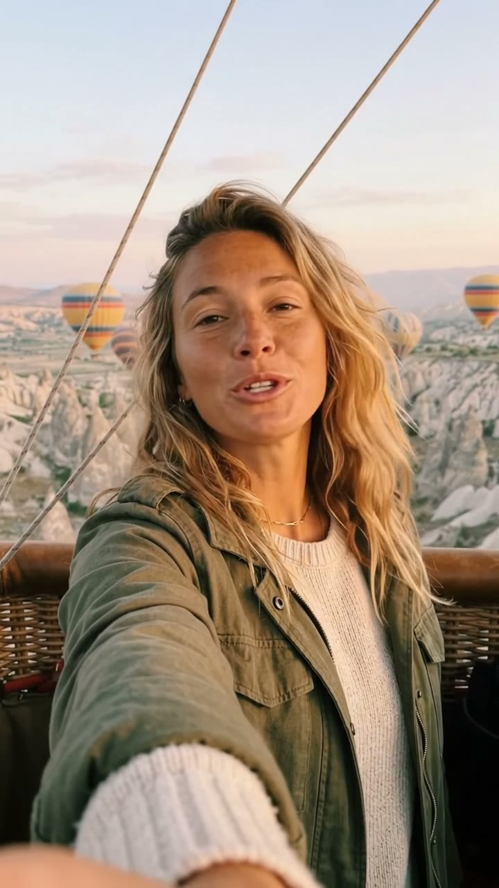
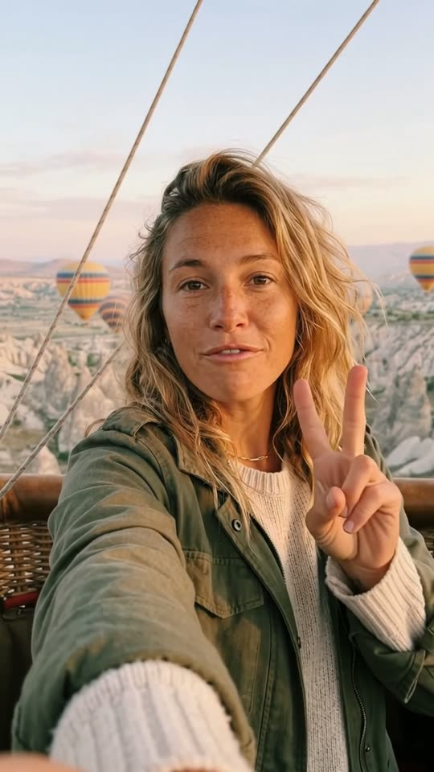
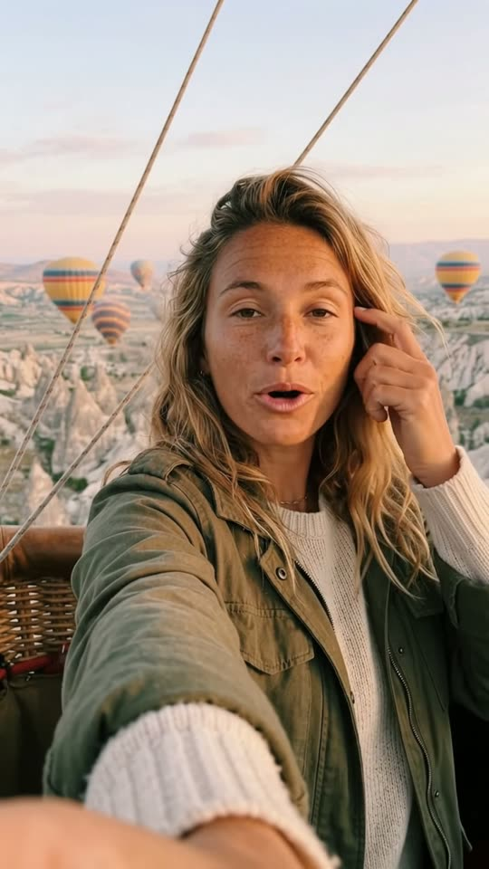
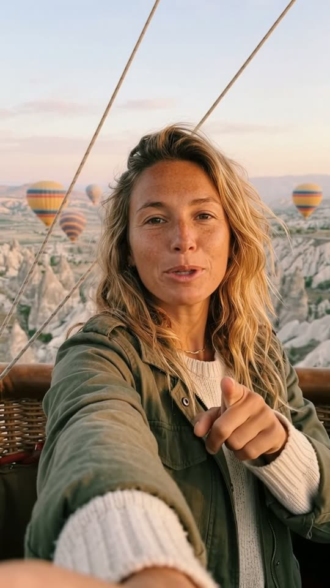

Free prompt pack · all of it
She's not real.Neither is the balloon.
Nobody filmed this. It's one photo and two clips from Google Flow, 10 seconds and 6 seconds. That's 25 of the 50 credits Flow gives you free every day. Claude wrote both prompts, second by second.
Here's every prompt, ready to copy. Each prompt is packed in a flat balloon. Hold the burner to fill it and it lifts off the prompt.
Her first frame
Images cost zero credits. In Flow, choose Image, Nano Banana Pro, 9:16. Generate until you like one. It's free, so don't settle.
Watch out
Her jumper, the sunrise and the far balloons all come from this photo. Both clips copy it, so get it right here.

The prompt 136 words
Close selfie photograph taken at arm's length inside the wicker basket of a hot-air balloon flying at sunrise over a wide valley of pale rock spires. A woman of about twenty-seven with sun-browned skin, light freckles, loose honey-blonde wavy hair moved by the wind and a thin gold chain, wearing a cream knitted jumper under an open olive field jacket. Her face fills the upper-middle of the picture, eyes on the lens, lips parted mid-sentence, her right shoulder rising toward the lens where her arm reaches out of the picture. Behind her: the woven rim of the basket, two taut ropes, and a dozen distant striped balloons floating in a soft pink and gold sky above the valley. Natural skin with pores and fine hair, warm low sunlight from frame-left, soft fine grain, crisp natural detail.
The hook
Attach the photo. Video, 9:16, 720p, 10 s. Four short sentences in ten seconds, and every one of them has a gesture tied to a second.
- 0.4 sEyebrows up: I'm not real
- 2.6 sHead tips back toward the ropes
- 5.0 sShe leans closer to the lens
- 6.8 sOne finger, then two
- 9.2 sLips closed, grinning. Hold
Watch out
Every word came out exact, with no music, on the first try. The AUDIO block says one speaker, one line, once.
Fragments

The prompt 554 words
FORMAT Real footage seen as the finished exported video file: the full picture edge to edge, nothing on top of it. The video runs at 24 fps. No frame is repeated. Real time, 1x speed, never slow motion. One continuous take, no cuts. REFERENCE Use the reference image for the woman, her clothing, the basket and the valley. Her face matches the reference exactly: zero drift, no smoothing. LOCATION MAP The wicker basket of a hot-air balloon in slow level flight at sunrise, high above a wide valley of pale rock spires. The woven basket rim is at her waist height; taut ropes rise out of the top of the frame behind her. Far behind and below her, about a dozen striped balloons hang in a soft pink and gold sky. The sun is low and warm on frame-left. The basket drifts very slowly, so the far balloons slide a little across the background. The burner above is never in frame and never lit: no flame, no flash of light, no roar. THE WOMAN About twenty-seven, sun-browned skin, light freckles, loose honey-blonde wavy hair moved by the wind, thin gold chain, cream knitted jumper under an open olive field jacket. VOICE Warm mid-range with a little rasp, casual American English, quick and easy like a voice note to a friend, smiling through the words. She does not sound like an advert or a presenter. LOOK Warm sunrise colour, soft fine grain, real skin with pores and fine hair. No camera app interface: no shutter button, no gallery thumbnail, no record button, no icons, no timer, no recording dot, no frame lines. Whatever records the picture is never visible. LOCKS Only this woman in the basket, no pilot, no other passengers. No music, no score, no narration, no subtitles, no captions, no on-screen text, no watermark, no logos. No letters or numbers anywhere in the frame. CAMERA Held at arm's length by the woman herself, 50 cm from her face, slightly above her eye level; her sleeve enters the bottom edge of the frame. It floats with her arm, a small natural sway, and her face stays in the upper-middle of the frame the whole time. It never orbits, never cuts away, never zooms, never turns to show the view. FIRST FRAME Her face fills the upper-middle of the frame, already talking, eyes on the lens, hair blowing across her cheek. Basket rim, ropes and the far balloons behind her. ACTION TIMING 0-0.4 s: she draws a quick breath, eyebrows up. 0.4-2.6 s: first sentence, a small shake of the head on the word not. 2.6-5.0 s: second sentence, she tips her head back toward the ropes for half a second, then her eyes return to the lens. 5.0-6.8 s: third sentence, she leans a little closer to the lens. 6.8-9.2 s: fourth sentence, she raises one finger and then two fingers of her free hand next to her cheek. 9.2-10 s: she stops talking, lips closed, grinning, the hair keeps moving. Hold to the last frame. AUDIO Exactly one speaker. The woman says, once, in order: "I'm not real. This balloon isn't real either. Nobody filmed this. It's just one photo and one prompt." Nobody else speaks. Under her voice, quietly: light wind brushing close to the lens, the wicker creaking, a rope ticking.
The payoff
Attach the same photo. This time, 6 s. The same blocks, word for word, and a new timing card. That's why she's the same woman in the same basket.
- 0.3 sTwo taps on her temple
- 2.8 sShe points straight at the lens
- 5.0 sThe wink
Watch out
The prompt spells out how to say it: "Claude" is pronounced "clawd". Leave that out and the voice gets the name wrong.
Fragments


The prompt 511 words
FORMAT Real footage seen as the finished exported video file: the full picture edge to edge, nothing on top of it. The video runs at 24 fps. No frame is repeated. Real time, 1x speed, never slow motion. One continuous take, no cuts. REFERENCE Use the reference image for the woman, her clothing, the basket and the valley. Her face matches the reference exactly: zero drift, no smoothing. LOCATION MAP The wicker basket of a hot-air balloon in slow level flight at sunrise, high above a wide valley of pale rock spires. The woven basket rim is at her waist height; taut ropes rise out of the top of the frame behind her. Far behind and below her, about a dozen striped balloons hang in a soft pink and gold sky. The sun is low and warm on frame-left. The basket drifts very slowly, so the far balloons slide a little across the background. The burner above is never in frame and never lit: no flame, no flash of light, no roar. THE WOMAN About twenty-seven, sun-browned skin, light freckles, loose honey-blonde wavy hair moved by the wind, thin gold chain, cream knitted jumper under an open olive field jacket. VOICE Warm mid-range with a little rasp, casual American English, quick and easy like a voice note to a friend, smiling through the words. She does not sound like an advert or a presenter. "Claude" is pronounced "clawd". LOOK Warm sunrise colour, soft fine grain, real skin with pores and fine hair. No camera app interface: no shutter button, no gallery thumbnail, no record button, no icons, no timer, no recording dot, no frame lines. Whatever records the picture is never visible. LOCKS Only this woman in the basket, no pilot, no other passengers. No music, no score, no narration, no subtitles, no captions, no on-screen text, no watermark, no logos. No letters or numbers anywhere in the frame. CAMERA Held at arm's length by the woman herself, 50 cm from her face, slightly above her eye level; her sleeve enters the bottom edge of the frame. It floats with her arm, a small natural sway, and her face stays in the upper-middle of the frame the whole time. It never orbits, never cuts away, never zooms, never turns to show the view. FIRST FRAME Her face fills the upper-middle of the frame, already talking, eyes on the lens, hair blowing across her cheek. Basket rim, ropes and the far balloons behind her. ACTION TIMING 0-0.3 s: she draws a quick breath. 0.3-2.8 s: first sentence, she taps her temple twice with one finger of her free hand. 2.8-5.0 s: second sentence, she points that finger straight at the lens on the last word. 5.0-6 s: she stops talking, lips closed, grinning, she winks once. Hold to the last frame. AUDIO Exactly one speaker. The woman says, once, in order: "Claude wrote it, second by second. Comment balloon for the prompt." Nobody else speaks. Under her voice, quietly: light wind brushing close to the lens, the wicker creaking, a rope ticking.
Rule 01
One photo, first
Images cost 0 credits in Flow and a 10-second clip costs 15. Both clips started from the same photo, so they match.
Rule 02
Write the seconds
AI didn't make her look real. Telling it what her eyebrows do at 0.4 seconds did. Every gesture gets a timecode.
Rule 03
Ban the flash
The burner is never in frame and never lit. A flame filling the picture is exactly where the model cuts to something else.
That's every prompt
Your turn.One photo, one prompt.
Tomorrow the credits come back, whether you used them or not. Make something with today's. If yours works, send it over. I read every DM.
@martiifons